1.SINIF
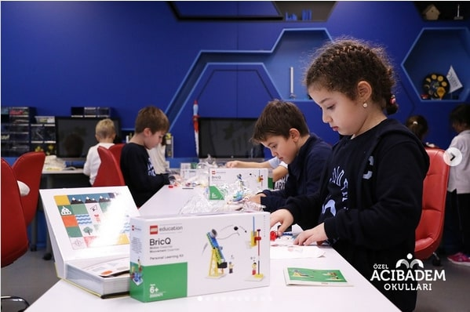B2RT Dersi tematik “Stem Kit”lerimizle çalışmalarımız devam ediyor.✨ Lego STEM setlerini kullanan 1.Sınıf öğrencilerimiz soyut fikirlerini somut bir hale getirebilmeleri için birleştirme mantığıyla oluşturulmuş yapı parçalarını kullanarak üretim sürecine ilk adımlarını attılar. Bilgisayarsız kodlama platformu "Badem" ile kodlama da yapan öğrencilerimiz, "Bireysel Öğrenme Setileri" ile nerede olurlarsa olsunlar, sınıftaki öğrenme deneyimini devam ettiriyorlar.
We continue to work with our B2RT Lesson thematic “Stem Kits”. Using Lego STEM sets, our Grade 1 students took their first steps into the production process by using building pieces created with the logic of combining things and they had the opportunity to turn their abstract ideas into concrete examples. Our students, who also code with the computer-free coding platform "Badem", continue to apply their in-class learning experience with "Individual Learning Sets”, wherever they are.
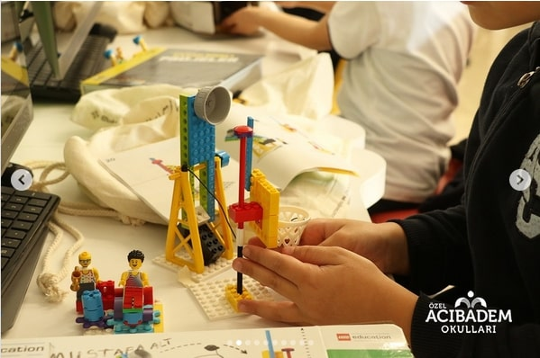 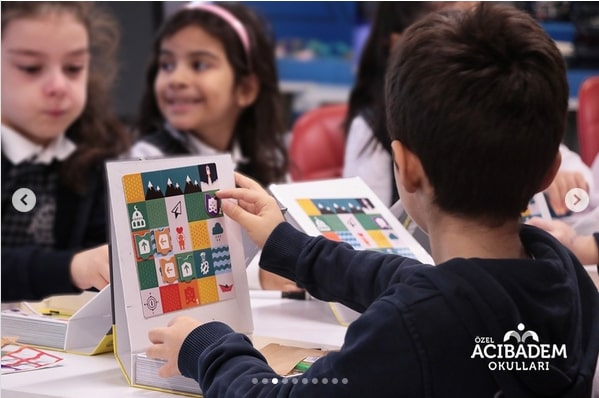 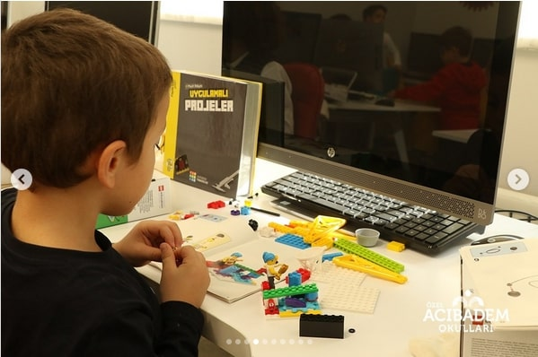
 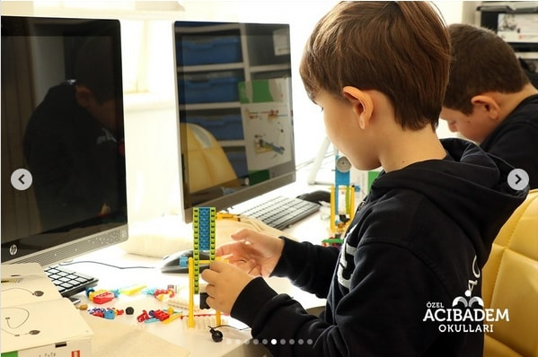
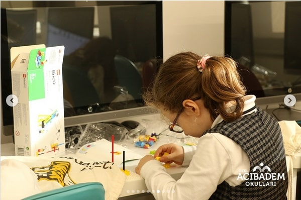
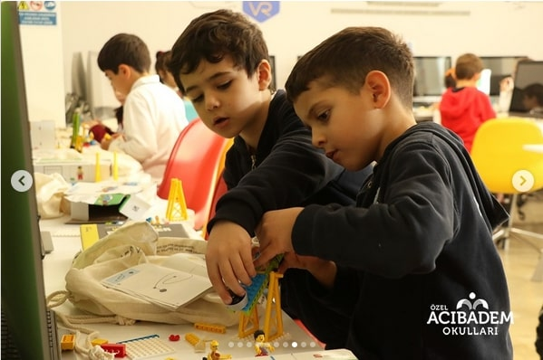
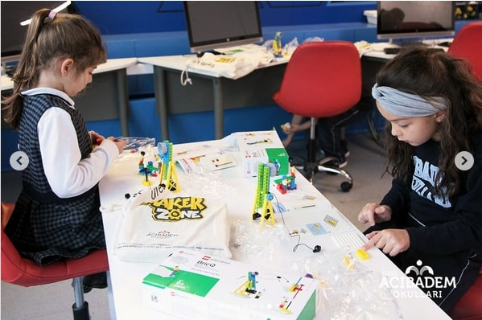
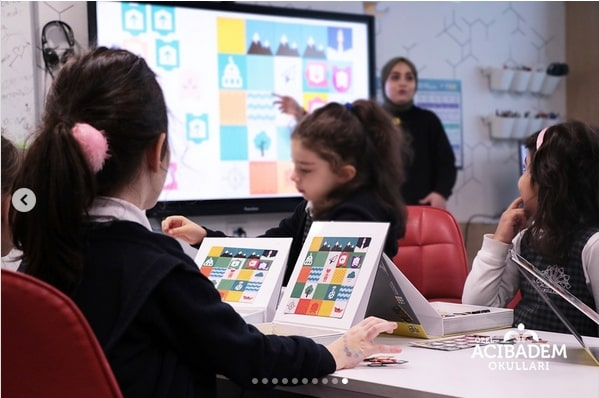
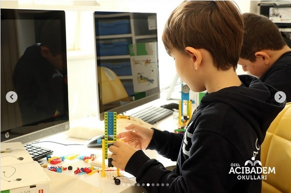
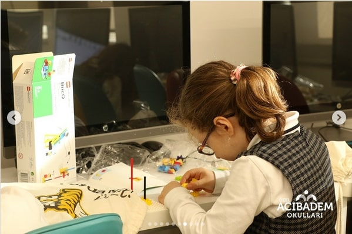
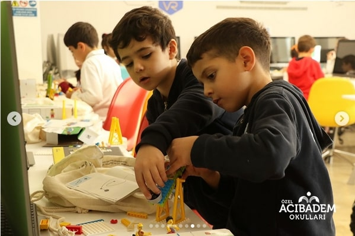
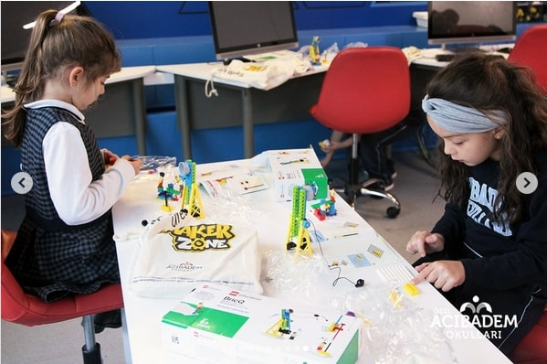
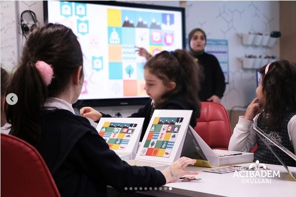